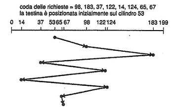
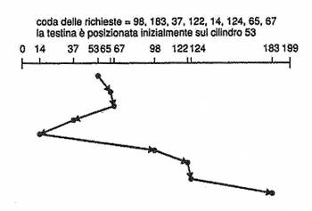
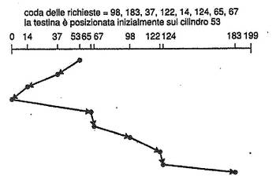
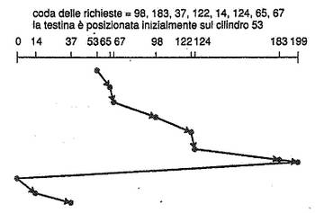
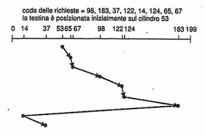

Torna alla pagina di Sistemi Operativi
:: Appunti 2.0 ::
Struttura delle memorie di massa
Struttura dei dischi
Nei computer attuali i dischi rappresentano la principale memoria secondaria. Sono indirizzati come grandi array monodimensionali di blocchi logici, ovvero la più piccola unità di dati trasferibile in lettura o scrittura. Questo array viene mappato nei settori del disco in modo sequenziale, così da poter convertire un indirizzo logico di un blocco nel corrispondente indirizzo fisico.
L'indirizzo fisico è composto da numero di cilindro, numero di traccia all'interno del cilindro e numero di settore all'interno della traccia. In alcuni dispositivi il numero di settori per traccia non è costante perché più la traccia è distante dal centro maggiore è il numero di settori che può contenere. Per mantenere lo stesso tasso di dati scanditi dalla testina si fa in modo di incrementare la velocità di rotazione del disco quando accede alle tracce più interne. Altri dispositivi come i dischi rigidi mantengono invece costante la velocità angolare, ma diminuiscono la densità di bit dall'interno all'esterno.
Schedulazione degli accessi al disco
Per rendere più efficiente l'uso del disco bisogna avere un rapido tempo di accesso e una buona larghezza di banda. Il tempo di accesso è dato dal tempo di ricerca (per muovere la testina fino al cilindro col settore richiesto) e dalla latenza di rotazione (che fa in modo che il disco ruoti fino al settore desiderato). La larghezza di banda è invece il numero di byte trasferiti nell'unità di tempo. E' possibile migliorare entrambi questi fattori programmando opportunamente le schedulazioni delle richieste di I/O.
La larghezza di banda è un fattore legato soprattutto all'hardware del sistema, dunque per aumentarne le prestazioni (maggiore ampiezza) bisognerebbe scegliere dischi e interfacce più performanti. I tempi di accesso sono invece migliorabili con la schedulazione degli accessi, che si pone come obiettivo quello di fare in modo che il processo ottenga i dati nel minor tempo mediamente possibile.
Schedulazione FCFS
La schedulazione FCFS (First Come First Served) è la più semplice: "primo arrivato, primo servito". E' indubbiamente l'algoritmo più equo, ma non garantisce affatto le prestazioni migliori.

Schedulazione SSTF
Nella schedulazione SSTF (Shortest Seek Time First) si sceglie la richiesta che comporta il minor tempo di ricerca rispetto alla posizione corrente della testina, anche se è stata l'ultima a entrare in coda. Non importa ciò che perde o guadagna un singolo processo, è importante che nel complesso il sistema sia più rapido e lo è di circa tre volte rispetto la FCFS. Poiché la coda viene riempita in continuazione si potrebbero verificare fenomeni di starvation.

Abbiamo già detto che la SSTF è migliore del FSFS, ma non è ancora l'algoritmo ottimale.
Schedulazione SCAN
Con l'algoritmo di schedulazione SCAN viene effettuata una sorta di scansione del disco muovendo il braccio della testina da un'estremità all'altra e servendo tutte le richieste che si incontrano sul percorso. Se dunque durante una scansione entrerà in coda una richiesta ad un cilindro che si trova in quella direzione, verrà presto servita; altrimenti dovrà aspettare il suo ritorno al prossimo giro. La SCAN rende minimo il numero di cambiamenti di direzione della testina, tenendo conto del fatto che essi comportano rallentamenti e usura.
Viene anche chiamato algoritmo dell'ascensore perché serve tutte le richieste in salita e poi quelle in discesa.

Schedulazione C-SCAN
La schedulazione C-SCAN muove la testina da un capo all'altro del disco come una SCAN, ma quando raggiunge un'estremità ritorna a quella opposta senza servire alcuna richiesta durante il rientro. Serve quindi in un'unica direzione, assicurando tempi di attesa più uniformi.

Schedulazione LOOK
La LOOK è una versione più efficiente dei due algoritmi precedenti, di cui prende gli stessi principi salvo il fatto che il suo braccio non percorre l'intera larghezza del disco, ma si ferma all'ultima richiesta da servire per ciascuna delle due direzioni. Va da sé che esiste anche una versione C-LOOK.

Selezione dell'algoritmo di schedulazione
In generale sia l'SSTF che il LOOK sono una scelta ragionevole come algoritmi predefiniti, perché danno tempi di accesso mediamente bassi. Vanno però considerati altri fattori, tra cui:
- carico di lavoro, se è elevato sarebbe preferibile evitare la SSTF che può incorrere facilmente in starvation
- allocazione dei file, dato che allocazioni contigue presuppongono movimenti limitati della testina, mentre quelle collegate o indicizzate il contrario
- posizione della directory e dei blocchi di indici, sono vicini o no a quelli del file?
Per tutte queste complessità la procedura di schedulazione del disco andrebbe mantenuta separata dal sistema operativo e effettuata direttamente in hardware, dove possono essere più facilmente considerati altri fattori quali il tempo di latenza. Nella pratica però il sistema operativo impone alcuni vincoli anche in questi scenari, intervenendo su queste procedure ad esempio per segnalare delle priorità o per imporre dei vincoli su alcuni ordini di accesso (per prevenire crash del sistema), ecc.
Gli algoritmi visti finora toccano infatti solo l'ordinamento delle richieste e considerano tutti i processi ugualmente importanti, ma per un motivo: politiche di priorità forzerebbero la testina a spostarsi molto di più, il che comporterebbe un aumento dei tempi di accesso globale.
Amministrazione del disco
Configurazione del disco
Per poter memorizzare dati un disco deve essere suddiviso in settori che il controller possa leggere e scrivere. Questo processo prende il nome di formattazione fisica o a basso livello, e per ogni settore predispone la seguente struttura dati: intestazione, zona dati e terminatore. Intestazione e terminatore contengono informazioni per il controller, cioè il numero di settore e la parola di verifica. Questa è scritta in un codice di correzione degli errori, quindi non solo è in grado di rilevare i settori corrotti ma anche di ripristinarli.
Per memorizzare i file su disco bisogna a questo punto partizionarlo in uno o più insiemi di cilindri detti partizioni, ognuno indipendente dall'altro.
Infine si procede con una formattazione logica che provveda alla creazione di un file system.
Nel caso in cui non si voglia formattare alcun file system, la partizione viene lasciata come grande array di blocchi sequenziali e assume il nome di disco grezzo. Il suo principale utilizzo è per l'area di swap.
Il blocco di avvio
Il bootstrap è un programma da eseguire a ogni avvio del sistema e ha il compito di inizializzarne tutte le funzioni, quindi i registri della CPU, i controller di periferica ed il contenuto della memoria centrale. In altre parole è preposto all'avvio del sistema operativo.
In molti computer risiede su memorie ROM (non volatili e di sola lettura), che in alcuni casi contengono un loader che referenzia una partizione di avvio interamente caricata su disco, chiamata disco di boot o di sistema. Questa seconda modalità d'avvio è sicuramente più sofisticata di quella interamente memorizzata su ROM.
Blocchi difettosi
I dischi sono dispositivi in continuo movimento e con meccanismi molto delicati, dunque sono particolarmente soggetti a guasti. Su dischi semplici la gestione dei blocchi difettosi (bad block) prevede il loro isolamento con una marcatura nella tabella FAT, e conseguente perdita dei dati se erano in uso.
Dischi più sofisticati hanno tecniche di gestione più complesse. Anzitutto viene mantenuta una lista dei blocchi guasti costantemente aggiornata direttamente su disco, dopodiché sono previste tutta una serie di contromisure hardware e software. Vengono ad esempio riservati un certo numero di settori aggiuntivi di scorta (sector sparing), utilizzabili esclusivamente per sostituire blocchi difettosi e previsti per ogni cilindro così da mantenere i vantaggi della schedulazione. Un altro sistema è quello dello slittamento di settore (sector slipping), che prevede il rimappaggio di tutta una serie di settori traslandoli di un'unità.
L'intervento manuale è richiesto comunque poiché si incorre spesso in una perdita di dati.
Gestione dello spazio di swap
La gestione dello spazio di swap ha come ovvio obiettivo quello di gestirlo al meglio, compito non banale dato che gli accessi al disco sono di gran lunga le operazioni più lente del sistema.
Uso dello spazio di swap
L'uso dello spazio di swap dipende dal sistema operativo installato e dagli algoritmi di gestione della memoria che implementa. Ad esempio può essere usato per conservare le immagini dei processi (dati e codice compreso), o per immagazzinare le pagine tolte dalla memoria centrale.
Possono essere riservati fino ad alcuni gigabyte di disco per lo swap, ed è sempre meglio sovrastimarlo piuttosto che vedersi abortire alcuni processi perché non hanno abbastanza spazio.
Locazione dello spazio di swap
Lo spazio di swap può risiedere in due posti:
- in un file, quindi gestito attraverso le normali funzioni del file system. Tra i suoi svantaggi ha la frammentazione esterna e un tempo di gestione elevato, colpa della necessità di continuare a scandire la struttura directory e dati
- avere una partizione separata dal disco, senza alcun file system (grezza). Quello che si perde in efficienza di salvataggio e in aumento della frammentazione interna, lo si guadagna enormemente in velocità.
La seconda via è quella più saggia dato che nell'area di swap ci vanno generalmente solo dati con un periodo di vita molto breve e su cui avvengono richieste d'accesso molto frequenti; la velocità in questi casi è il fattore da perseguire.
In alcuni sistemi operativi sono implementati entrambi.
La struttura RAID
Con la riduzione delle dimensioni delle unità disco è diventato possibile collegarne più di una insieme, così da sfruttare le maggiori velocità se fatte lavorare in parallelo o per migliorare l'affidabilità memorizzando informazioni ridondanti. Esistono tutta una serie di tecniche di organizzazione dei dischi che prendono il nome di RAID, ovvero array ridondante di dischi a basso costo o indipendenti. La struttura RAID può essere definita come gruppo di dischi fisici gestiti in modo integrato così da apparire un unico disco con caratteristiche elevate di tolleranza ai guasti o di prestazioni.
Il miglioramento dell'affidabilità mediante la ridondanza
Consideriamo l'affidabilità e osserviamo che la possibilità che un certo disco in un insieme di dischi si guasti è molto maggiore rispetto alla probabilità che non ne funzioni più uno indipendente. Tale problema può essere superato con la ridondanza, cioè con la memorizzazione di informazioni supplementari normalmente non necessarie ma utili in caso di guasto.
Il metodo più semplice per introdurre la ridondanza è duplicare ogni disco con una tecnica chiamata mirroring, creando un disco logico che è in realtà costituito da due dischi fisici identici. Ogni scrittura deve avvenire su entrambi, possibilmente in tempi diversi come precauzione contro l'incoerenza.
Con una ridondanza del 100% dello spazio a disposizione protegge con efficacia dai guasti singoli, ma una volta ripristinato un blocco danneggiato questo rimane "scoperto".
Il tempo medio al guasto di un disco in mirroring dipende sia da quello dei singoli dischi che dai tempi medi di riparazione, ma è comunque molto alto.
Il miglioramento delle prestazioni con il parallelismo
Il mirroring dei dati aumenta l'affidabilità a scapito delle prestazioni dato che le operazioni per unità di tempo sono raddoppiate. Per aumentare la velocità di trasferimento si può invece adottare la tecnica del data-striping, che consiste nel dividere i bit di ogni byte su dischi multipli (bit-level striping). Se ad esempio abbiamo 8 dischi e distribuiamo gli 8 bit che compongono un byte a ciascuno di essi, avremo un disco logico 8 volte più grande di quello fisico e soprattutto con velocità di accesso 8 volte maggiori!
Questa tecnica - che realizza di fatto il parallelismo - può essere generalizzata a un qualunque multiplo o sottomultiplo di 8 dischi, e non si limita esclusivamente allo spezzettamento del byte ma anche a quello dei blocchi (block-level striping).
Gli obiettivi del parallelismo sono dunque quelli di aumentare il rendimento di piccoli accessi multipli equilibrando il carico, e ridurre il tempo di risposta per gli accessi di maggiore entità.
I livelli di RAID
Esistono diverse configurazioni di dischi che cercano questo o quel compromesso tra il fattore affidabilità e quello delle prestazioni, e prendono il nome di livelli di RAID. Elenchiamoli:
- RAID livello 0:
array di dischi con spezzettamento dei blocchi ma nessuna ridondanza. Altissime prestazioni ma nessuna protezione contro i guasti
- RAID livello 1:
mirroring
- RAID livello 2 o di organizzazione a codice di correzione di errore (ECC):
si basa sul bit di parità per il rilevamento di errori a singoli bit, mentre utilizza bit supplementari (mantenuti su dischi separati) negli schemi di correzione degli errori per ricostruirli. Per quattro dischi ne sono necessari altri tre per realizzare questo schema. Alte prestazioni ottenute tramite bit-level striping
- RAID livello 3 o di organizzazione di parità a bit alternati:
si basa sul fatto che i controllori dei dischi possono individuare se un settore è danneggiato, e quindi si può ricostruire il dato danneggiato controllando la parità dei restanti dischi. Migliora il livello 2 dato che è sufficiente un unico disco supplementare a parità di efficacia.
Rispetto ai livelli senza parità, il livello 3 supporta un numero più basso di I/O al secondo perché ogni disco deve partecipare a ogni richiesta, ed è inoltre più lento perché parte del tempo viene speso per il controllo della parità. Le prestazioni possono essere migliorate introducendo un controller hardware dedicato alla parità e utilizzando una cache per memorizzare i blocchi mentre questa viene calcolata
- RAID livello 4 o di organizzazione di parità a blocchi alternati:
usa una suddivisione a livello di blocco come nel RAID 0 ma ne mantiene in più uno di parità su un disco separato. Se un disco viene a mancare, il blocco di parità in collaborazione con gli altri blocchi corrispondenti degli altri dischi è in grado di ripristinarlo. La lettura di un blocco accede solo a un disco, mantenendo gli altri liberi per altre richieste; questo rallenta la velocità di trasferimento per ogni accesso ma consente accessi multipli in parallelo. La velocità generale di I/O è quindi elevata, escludendo i casi di accesso a porzioni di dati inferiori ad un blocco
- RAID livello 5 o di parità distribuita a blocchi alternati:
distribuisce i dati e le parità tra tutti i dischi invece che mantenere queste ultime in un disco separato. Per ogni blocco c'è quindi un disco che memorizza la parità e gli altri i dati. In questo modo si evita l'uso eccessivo del disco di singola parità in caso di guasto
- RAID livello 6 o schema di ridondanza P+Q:
è simile al RAID 5 ma memorizza ulteriori informazioni ridondanti così da essere in grado di fronteggiare guasti contemporanei di più dischi. Non usa la parità ma particolari codici correttori degli errori noti come di Reed-Solomon
- RAID livello 0+1:
combina il livello 0 e 1 e i rispettivi benefici. E' composto da due serie di dischi in bit-level striping messi in mirroring tra loro. Esiste anche il livello 1+0 costituito da dischi in mirroring messi in data-striping con altre coppie. Il vantaggio teorico di quest'ultimo è che il guasto su un disco non comporta l'inaccessibilità di tutta la sua suddivisione, ma unicamente la sua coppia in mirroring
Scelta di un livello di RAID
Come scegliere il livello di RAID più adeguato alle proprie necessità? Se ciò che interessano sono le prestazioni e la perdita dei dati non è un fattore critico, allora la scelta è ovvia: RAID 0. Se servono invece alte affidabilità e recuperi veloci, si punti sul RAID 1. Se si vuole un compromesso tra i due fattori si scelga tra RAID 0+1 o 1+0, o in alternativa RAID 5 se si vuole usare un numero minore di dischi; il RAID 6 sarebbe più efficiente, ma non è ancora pienamente supportato.
Ultima nota sul RAID è che è possibile predisporre dischi di ricambio (hot spare) non utilizzati per i dati ma configurati in modo da rimpiazzare immediatamente un disco guasto.
Collegamento dei dischi
I computer possono accedere in due modi alla memoria su disco: mediante la memorizzazione con collegamento all'host o con quella a collegamento di rete.
Memorizzazione con collegamento all'host
A questo tipo di memorizzazione si accede tramite le porte locali di I/O, che possono avere diverse architetture (ad esempio IDE, ATA o SCSI e FC). I comandi I/O che danno inizio ai trasferimento dei dati sono letture e scritture di blocchi logici di dati diretti a ben precise unità di memorizzazione.
Memorizzazione con collegamento di rete
In questi sistemi si accede a distanza su una rete di dati con un'interfaccia di chiamata di procedura remota (RPC), ad esempio NFS in UNIX o CIFS in Windows. Questo collegamento consente ai computer di una LAN di condividere in modo conveniente periferiche di memorizzazione, anche se sicuramente con prestazioni inferiori rispetto ai collegamenti diretti.
Struttura di memoria terziaria
Periferiche di archiviazione terziaria
Il basso costo è la caratteristica principale di una memorizzazione terziaria, che viene tipicamente effettuata su supporti rimovibili.
Dischi rimovibili
Ne abbiamo di diversi tipi:
- dischi magnetici (ad esempio i floppy), caratterizzati da alta velocità di accesso ma maggior rischio di danni
- dischi magneto-ottici, che usano tecniche sia magnetiche che ottiche (quindi anche laser). Sono più resistenti alla rottura delle testine
- dischi ottici, tra cui dischi a sola lettura o riscrivibili (anche detti a cambiamento di fase)
I nastri
I nastri contengono più dati di un disco ottico o magnetico e sono più economici a parità di dimensione. Sono particolarmente adatti all'accesso sequenziale e vengono spesso utilizzati per copie di backup e non per accessi diretti.
Le tecnologie future
Vediamone alcune:
- memorizzazione olografica: usa la luce laser per registrare fotografie olografiche da milioni di bit su speciali dispositivi. Ha una velocità di trasferimento altissima e sta diventando sempre più affidabile
- sistemi meccanici microelettronici: potrebbero fornire una tecnologia di memorizzazione non volatile dei dati più veloce del disco magnetico e più economica della DRAM
Compiti del sistema operativo
Due importanti compiti di un sistema operativo sono la gestione dei dispositivi fisici e la presentazione alle applicazioni di un'astrazione di macchine virtuale. Vediamo come vengono gestite sui supporti rimovibili:
Interfaccia dell'applicazione
La maggior parte dei sistemi operativi gestisce i dischi rimovibili come se fossero fissi, dunque possono essere sia formattati con un file system sia gestiti in modo grezzo. Può avvenire un uso condiviso dei propri dati tra più processi attivi, e le modalità d'accesso possono essere sia dirette che sequenziali.
Con le unità nastro l'interfaccia dell'applicazione cambia: vengono utilizzati solo in modo grezzo e il loro usufrutto è esclusivo di un solo processo alla volta. L'accesso è strettamente sequenziale. In linea di principio è possibile implementare un file system su nastro, ma con strutture dati e algoritmi completamente differenti da quelli visti finora.
Nomina dei file
Uno dei maggiori problemi di gestione della memoria terziaria è trovare una denominazione univoca dei file nei supporti rimovibili, che includa un identificativo del dispositivo e che garantisca inoltre la portabilità. Non esiste una soluzione omogenea per tutti i sistemi operativi, salvo per alcuni supporti di memorizzazione standardizzati come i CD e i DVD.
Gestione della memorizzazione gerarchica
La gestione della memorizzazione gerarchica aumenta il grado di astrazione del sistema ed estende la gerarchia di memorizzazione oltre la memoria centrale secondaria per incorporare la terziaria. Fa uso di jukebox robotizzati per la sostituzione dei supporti senza intervento umano, e viene utilizzato solitamente nei centri di calcolo con supercomputer e in altre grandi installazioni con enormi quantità di dati.
Torna alla pagina di Sistemi Operativi